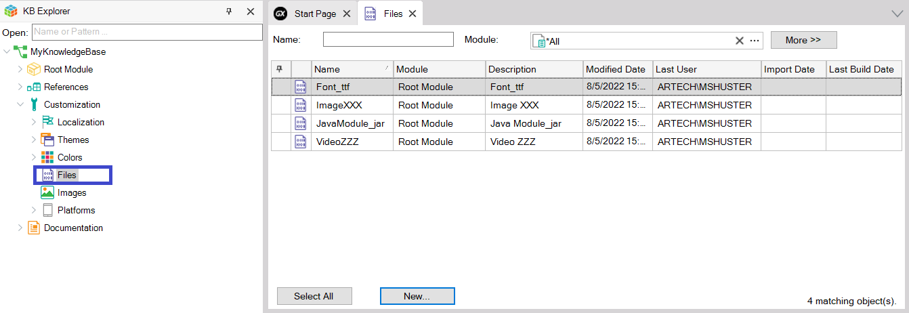
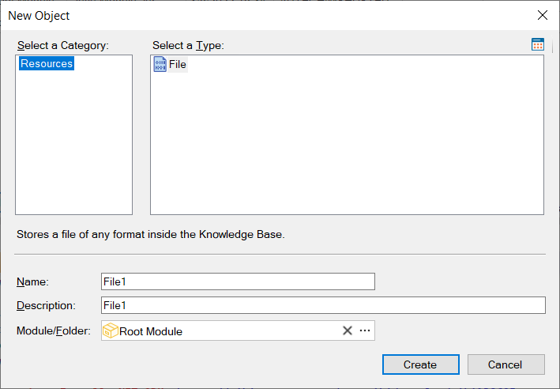
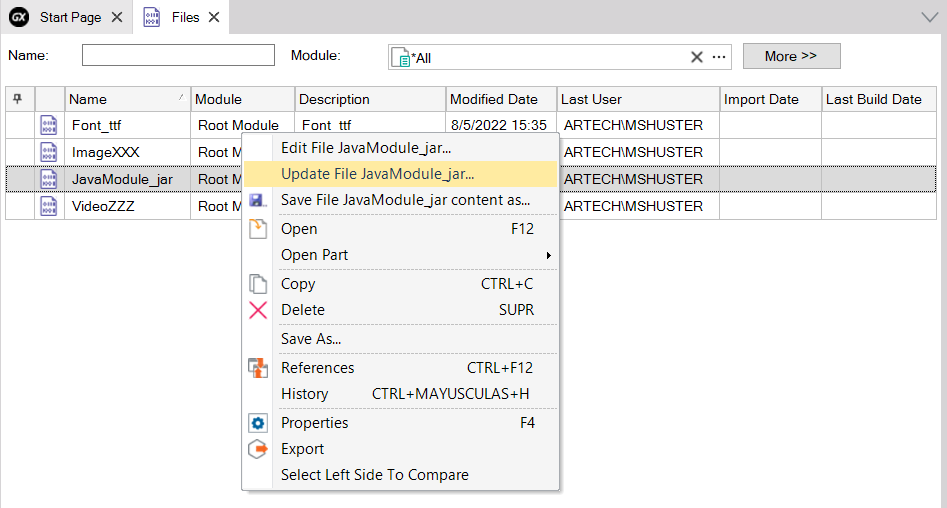
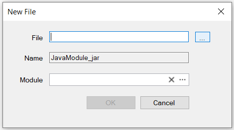
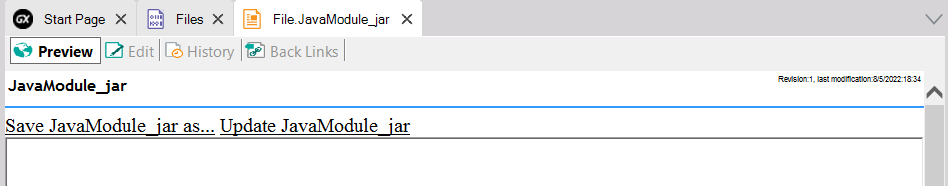

Stores a file of any format inside the Knowledge Base.
GeneXus supports storing files of any format inside your Knowledge Base. To do so, you have to create a new File object for each file you want to include inside your Knowledge Base.
The main objective is to contain all the project knowledge within your Knowledge Base while simplifying associated management tasks. In other words, Knowledge Bases are used as common repositories, and project management is simplified.
Observe the following image that shows where to work with files:

To create a File object click on the New... button shown above. Another way to create a File object is by selecting from the main GeneXus Menu: File > New > Object.
In both cases, the New object dialog will be displayed, but if you use the New... button you have the advantage of having the File object type preselected:

When right-clicking on a File the following context menu is displayed:

Opens the File in the editor for that type of file (defined in the operating system). With that editor, the file can be modified and when saving, the file is updated in the Knowledge Base.
The following dialog is opened so that you can upload again the file associated with this File object and/or update its Module:

Allows you to save the File on a path external to the Knowledge Base.
Opens the file Documentation page.
The below image shows what you will see when selecting Open (or double click) for the JavaModule_jar file:

The Preview tab offers the actions described above:
The Edit tab allows you to write/edit the File Documentation and the other tabs show the File History and Backlinks, respectively.
They help you define the File's behavior in relation to the following items: